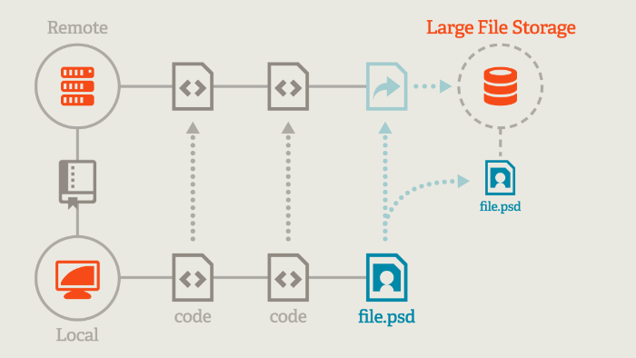

DVCS, Games and Git
Tom Read Cutting
Goals of this Talk
- What problems do VCS solve?
- What are the benefits of Helix (Perforce)?
- What are the benefits of Git?
- What are the trade-offs of each model?
- Would we want to use Git for games?
Content of this talk
- Helix (Perforce)
- Git
- Git LFS
- Q&A and Discussion
Helix (Perforce)
- Centralized
- Have to "check" files "out"
- File modifications grouped into changelists*
- If no one else has edited those files can "check in"
- Centralized server keeps revisions of every file in terms of these changelist changes*
Consequences of Perforce's Model
- Project history tracked in one place
- Central system knows who is working on which file*
- Software needs Perforce integration*
- Can't work when offline
- Branches are expensive
What is Git?
Git is a Source Control Management system
Developed by Linus Torvalds because he couldn't find a version control system that was:
- Distributed
- Performant
- Secure
So how does it work?
Centralized VCS

Distributed VCS

Local Version Control
You want to be able to keep track of logical changes to your code locally, and be secure that those changes you put in are the changes that come out.

Guaranteeing Security
Hash Everything!
Side Benefit: Content Addressable Data.
This is fundamental to how Git works.
Cannot modify history!
A commit is just a hash

Branching?
A branch is just a file containing a single hash value

Super-Duper cheap!
Merging?
Find most recent common commit of two branches, take the content of everything at that point-in-time and do a three-way merge.
A merge commit is the same as any-other, it just has two parent commits instead of one.
Git is good at merging.
Implementation?
All of this data is simply stored in a `.git` at the root of your workspace, that is an entire Git repository.
Collaboration?
Other people simply have their own git repositories that they commit data to, sharing code is simply a matter of merging each-other's branches.
Remotes
The concept of a "central" server is extremely useful, especially for collaboration.
But it is nothing special, just another Git repo.
You can merge changes down from it into your branches by pulling.
You can apply your changes onto it's branches by pushing.
Remotes (cont.)
A remote is simply a URI with a name, by default when you clone a remote your repository will be configured to have remote named origin which points to it.
Merging from a remote
Git just stores content of remote branches on your PC when you fetch like any other, can merge them into your branches like you would any other.

Workflow
Git has the concept of something called "the index", a way of staging your changes before committing them to your branch history.

Once you are happy with what you have staged you can commit everything to your repository.
Next Step...
Git in a nutshell, many things not covered... Resources at end of slide deck!
- Git GUIs
- The Git Book!
- How to write a good commit message...
- Tutorials and more!
Git
Performance: NOT "The same thing but faster"
This is a point that Linus Torvalds stresses when talking about Git, especially with regards to branching.
Cheap and fast branches change the way you use them completely.
Branch and Merge, Early and Often
You can only merge files once committed! If you mess-up the merge there is no way of losing the un-merged data as it's all hashed and verified in the Git history!
It does completely change the way you work.
Git is awesome right???
It is, for text files...
Not for binary files... 😔
The costs of binary in Git
- Entire history on each "client"
- Hard to diff
- No ability to lock files
- Good luck merging them...
Git LFS
Binary Files Stored on Central Server
Git Repository just contains files with indices to these files.
Various hooks and filters automatically replace these with the actual files when you check anything out...
And commit hooks automatically do the inverse when you commit...
Gains and losses
Binary data has all positives and negatives of Centralized VCS (can lock!).
Code has many of the benefits of DVCS.
There are also other things I personally prefer that Git does unrelated to it being decentralized (don't have to check-out files).
Is Git the Future in Games?
Things seem to be trending that way, but three big challenges remain...
- Useability
- Scalability
- Maturity
Recommended Resources
Special Thanks
Huw Bowles for organizing the reading group and AJ Weeks for providing valuable feedback.
Any Questions?
Image Sources
Diagrams and images were sources from https://git-scm.com/book/en/v2 (CC BY-NC-SA 3.0) and https://git-lfs.github.com/ (MIT License)